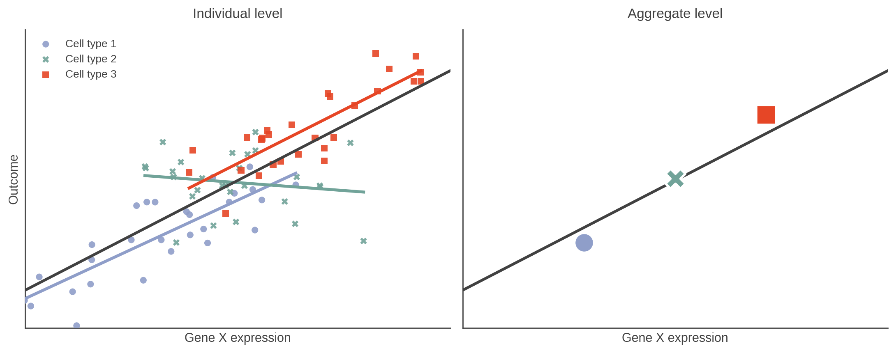
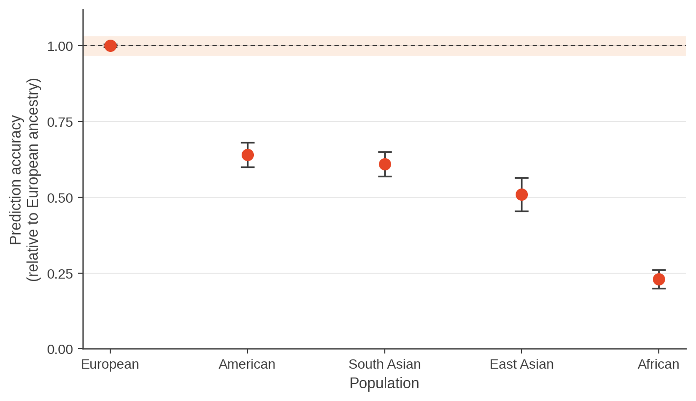

2.6 Generalisability: who and what the findings apply to
Design question: How far do the findings extend beyond this study?
Mainly affects: Generalisability
Also affects: Accuracy and interpretability · Power and cost
Most of the decisions in this section are made at recruitment, before anything in 2.1 to 2.5 happens. They appear last because they answer a different question. The earlier sections asked whether the study can measure what it set out to measure, and whether it has enough evidence to detect it. This one asks what the answer is an answer about.
A study can be internally valid and still have limited relevance beyond the population studied.
Internal validity is not external validity
Take a two group study where all cases come from Clinic A and all controls from Clinic B. Section 2.2 dealt with why that fails: clinic and disease are the same variable, and no analysis separates them.
Now suppose the design is fixed. Cases and controls are recruited from Clinic A together, matched on age and sex, randomised through the lab, and the batch structure is balanced. The confounding is gone, because clinic no longer varies with disease. Everything 2.2 asked for has been done, and the disease effect is cleanly estimable.
A second question remains, and nothing in the data answers it. Do patients at these two clinics resemble patients elsewhere?
- If the clinic is a tertiary referral centre, its patients are more severe than average.
- If it serves one neighbourhood, they share diet, environment and ancestry. The effect you measured is real, and it is an effect in that population.
The two questions are distinct. Fixing the confounding does not widen the cohort, and widening the cohort does not fix confounding. A study can fail either, both, or neither.
Two things "generalisability" can mean
It is worth separating them, because they are set by different decisions.
Population generalisability: who the findings apply to. Set by recruitment. Which individuals, from which places, at which point in the disease, under which conditions.
Biological scope: what the findings cover. Set by the platform, the tissue, and the timing. A targeted panel measures the features you named in advance and is silent on the rest. A single tissue tells you about that tissue. A single time point tells you about that moment.
Both are limits on the claim, and neither is a flaw. A study of one tissue in one cohort is a perfectly good study. The failure is claiming more than the design supports.
Scope can be exceeded in more than one way. Extending a finding beyond the people, conditions or biology actually studied is extrapolation: adults to children, one tissue to another, one mouse strain to mice, late-stage disease to early disease. A second problem is drawing a conclusion about individual units from a relationship observed in aggregate data, related to what is known as the ecological fallacy. If bulk RNA-seq shows gene X higher in diseased tissue, that does not establish that gene X is higher within any particular cell type. Expression may have risen within cells, or the tissue may now contain more of a cell type that already expressed it highly, or both. Bulk cannot distinguish them: the averaging limit from 2.1 becomes a limit on what you can conclude.

The same data at two levels. Each cell type has its own relationship between gene X expression and outcome (left), and the line through all the points describes the cell types rather than anyone in them. Seen only as three averages (right), the relationship looks clean and simple. Working with aggregate data is not the error; using a result derived from aggregates to draw a conclusion about individuals is.
The same trap appears when studies rather than cells are the unit. In meta-analysis, metaregression relates study level characteristics such as mean age or year of publication to the size of the reported effect, and associations found at that level need not hold within any study. Dekkers and colleagues illustrate this with CD4 count at the start of antiretroviral therapy: the count rose over calendar time within five of six studies, and the study-level metaregression showed no such trend. Whether the unit is a cell, a patient or a study, a relationship seen at one level cannot simply be assumed to hold at another.
Dekkers OM, Vandenbroucke JP, Cevallos M, Renehan AG, Altman DG, Egger M. COSMOS-E: Guidance on conducting systematic reviews and meta-analyses of observational studies of etiology. PLOS Medicine 2019; 16(2): e1002742. doi:10.1371/journal.pmed.1002742
Who is represented
Section 2.2 treated cohort composition as a source of confounding: sex skewed between groups, each group recruited from a different place, cases collected in one year and controls in another. Read the same variables again with the groups balanced, and a second question appears.
Sex. As section 2.2 showed, if the two groups are imbalanced by sex, sex can become a confounder and you cannot fix that afterwards. A single sex study is different. You can still estimate the comparison, and the effect you find is real, but it applies to that sex only. Module 1 showed that the transcriptome can differ substantially by sex in at least one tissue, which is why this matters. The key is simply to recognise the limitation and state it clearly.
Recruitment source. Where people are recruited from can be linked to their age, disease severity, medication use, other health conditions and socioeconomic position. If these characteristics are balanced across groups, they do not necessarily confound the comparison. But they still tell us who the study results apply to.
Disease spectrum. It matters which patients with the condition are included, not just where they were recruited. For example, comparing late stage, treatment naive patients with healthy controls may give a clear difference. But a marker that separates these groups may not be useful in the patients it would actually be used on, such as people with early disease, different levels of severity, or those already receiving treatment.
In general, the easier the comparison, the narrower the population the result may apply to. Treatment can create a similar issue. If most people in the cohort are taking the same drug, some of the difference you measure may be due to the treatment rather than the disease.
Site and season. Including multiple sites can make a study more representative of the wider population, but it can also introduce differences between sites that make the analysis harder. This is the trade-off in miniature: the design choice that improves generalisability can also make the analysis more complicated.
Season can matter too, especially for things influenced by diet, infections or daylight. If samples are collected in different seasons, some of the differences you observe may reflect season rather than the biology you are interested in.
Species, strain, and line. Outside human studies the same logic holds. One inbred mouse strain, one cell line, one cultivar, one field site. Inbred strains reduce variability, which improves power (2.4) and narrows what the result speaks to at the same time.
The trade-off
A tightly matched cohort reduces biological variation, making effects easier to detect and interpret. But the more narrowly you define the cohort, the fewer people the findings may apply to. Power and interpretability often favour a narrower cohort, while generalisability favours broader representation. You cannot maximise power, interpretability and generalisability all at the once.**
Case study: when the cohort decides who benefits
Genome-wide association studies have been conducted overwhelmingly in people of European ancestry. Each individual study can be internally sound: well powered, properly controlled for population structure, correctly analysed. Nothing inside any one of them flags a problem.
The consequence appears only when the results are used. Polygenic risk scores built from those studies are substantially less accurate in everyone else. Martin and colleagues quantified this across 17 quantitative traits. Taking prediction accuracy in European-ancestry individuals as 1, accuracy was around 0.6 in American and South Asian populations, roughly half in East Asian populations, and under a quarter in individuals of African ancestry.

Redrawn from data reported in Martin AR, et al. Nature Genetics 51,584–591 (2019). doi:10.1038/s41588-019-0379-x Figure created independently for this module. Points show mean relative accuracy across 17 quantitative traits; bars show standard error.
The mechanism is design, not analysis. Allele frequencies and linkage disequilibrium patterns differ between populations, so effect sizes estimated in one do not transfer cleanly to another. Trans-ancestry methods can narrow the gap, but no reanalysis recovers ancestry that was never in the study. Closing it takes more diverse cohorts.
Martin AR, Kanai M, Kamatani Y, Okada Y, Neale BM, Daly MJ. Clinical use of current polygenic risk scores may exacerbate health disparities. Nature Genetics 2019; 51(4): 584–591. doi:10.1038/s41588-019-0379-x
The evidence that this is not hypothetical
Two numbers from 2.4 are generalisability findings, not power findings.
At n = 3 per group, RNA-seq feature lists vary substantially between analyses. That is not only a detection problem. It means the gene list from one small study is a poor guide to what the next one will find.
In the meta-analysis of 244 clinical metabolomics studies, 72% of reported metabolites appeared in only a single study. Each of those studies found something. Almost none of them found the same thing.
Underpowered studies do not simply miss effects. They can also produce unstable findings that are less likely to replicate in another cohort, which is why power and generalisability are harder to separate than the three-question framing suggests.
What the sample can and cannot speak for
The lake and sea activity in 2.4 makes the same point at the level of the sampling unit. Three vials from one lake give a precise answer about that lake. They cannot tell you how much freshwater bodies differ from each other, because the study contains only one freshwater body.
Precision and scope are different quantities. More measurements within one unit buy precision. Only more units buy scope, and which one you need depends entirely on what the conclusion is meant to cover.
What to do about it
Three honest options, in increasing order of cost.
State the limitation. Name the population, the tissue, the platform and the time point in the conclusions, and do not claim past them. This costs nothing and is the most commonly skipped step. Section 2.3's metadata checklist is what makes it possible: without recorded ancestry, site, age and collection conditions, you cannot describe your own cohort accurately.
Broaden the design. More sites, more strains, more time points, both sexes. This widens the claim and adds variability, which costs power (2.4) and adds batch structure to manage (2.2). It is a real trade, not a free improvement.
Validate externally. Test the finding in a cohort that was not used to derive it. Module 1's Pitfall 10 set out when this is optional and when it is essential. It is the only one of the three that produces evidence rather than caveats.
Case study: what demonstrating generalisability looks like
Most case studies in this workshop are failures. This one is not.
Wirbel and colleagues asked whether gut microbiome signatures of colorectal cancer hold up across populations. Rather than a single cohort, they meta-analysed eight fecal shotgun metagenomic studies spanning three continents (n = 768), which differed in sampling procedure, storage and DNA extraction protocol. The technical heterogeneity was the point: a signature that survives it is not an artefact of one laboratory's workflow.
They identified a core set of 29 species enriched in colorectal cancer metagenomes, and found that signatures derived from single studies retained their accuracy when applied to the others. Models trained across multiple studies performed better still.
The design lesson. Generalisability was not asserted in a discussion section. It was tested, by holding out cohorts the model had never seen. That is the difference between a claim and a demonstration, and it was only possible because the individual studies had recorded enough about their cohorts and protocols to be combined.
Wirbel J, Pyl PT, Kartal E, et al. Meta-analysis of fecal metagenomes reveals global microbial signatures that are specific for colorectal cancer. Nature Medicine 2019; 25(4): 679–689. doi:10.1038/s41591-019-0406-6
What to carry forward
- Internal validity and external validity are separate. Fixing confounding does not widen the cohort.
- Generalisability has two halves: who the findings apply to, set at recruitment, and what they cover, set by platform, tissue and timing.
- A narrow cohort is a limitation, not an error. Claiming past it is the error.
- Matching and inbred lines buy power and interpretability by narrowing scope. That trade should be made deliberately.
- You cannot describe your own cohort without the metadata to describe it (2.3).
- Stating a limitation is free. Testing it in an independent cohort is the only thing that turns the claim into evidence.